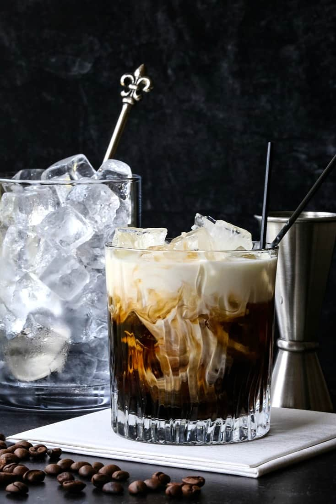

White Russian
home

Discription
A white Russian is a cocktail made with vodka, coffee liqueur (e.g.,
Kahlúa or Tia Maria)
and cream served with ice in an old fashioned
glass.
Ingredients
- 100ml Kahlua
- 100ml vodka
- 100ml heavy cream
Steps
- Fill a rocks glass with ice.
- Pour Kahlua and vodka into glass.
- Pour heavy cream over top and serve.